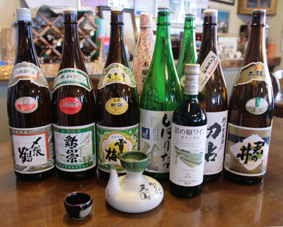

After a day in the outstanding Myoko snow, most everyone wants to relive the day's adventures over some convivial drinks and a few snacks. Here in the Lodge, we have not only a great place for people to gather, but some delicious beverages and foods as well.

All from Niigata: part of our selection of fine saké and wine, all locally produced.
Beer, whiskey and soft drinks are also available
We have some of the finest names in Niigata saké in stock—names like Shimeharu Tsuru, Setchubai, and the very local Kimi no Ii and Ayu Masamune. Some are best served cold; others are ideal for little cups of
atsukan hot saké. Wine, beer, whiskey and soft drinks are also available.
There's plenty of room available around our wood tables, or curl up in the warm, carpeted area around our wood stove. We have a menu of light foods and snacks to choose from as well, so we hope you'll join us for a drink and some snacks, sit near the fire, and share your stories with us!